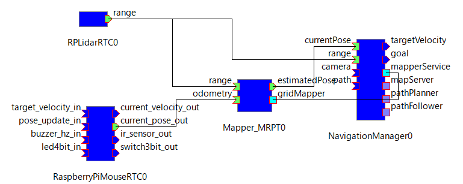
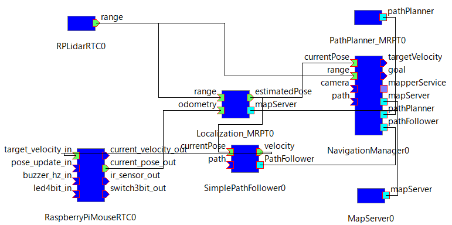

RaspberryPiMouse with OpenRTM-aist
RT-Components
| ○ RaspberryPiMouseRTC | [Start] [Stop] | | [Activate] [Deactivate] |
| ○ RPLidarRTC | [Start] [Stop] | | [Activate] [Deactivate] |
| ○ Mapper_MRPT | [Start] [Stop] | | [Activate] [Deactivate] |
| ○ Localization_MRPT | [Start] [Stop] | | [Activate] [Deactivate] |
| ○ PathPlanner_MRPT | [Start] [Stop] | | [Activate] [Deactivate] |
| ○ SimplePathFollower | [Start] [Stop] | | [Activate] [Deactivate] |
| ○ MapServer(Java) | [Start] [Stop] | | [Activate] [Deactivate] |
| ○ NavigationManager(Java) | [Start] [Stop] | | [Activate] [Deactivate] |
RTC List
Mapper
Create a map for a navigation.

Localization
RasPiMouse localization with the map.

PathPlan
RasPiMouse navigation by using a path planner using MRPT.
